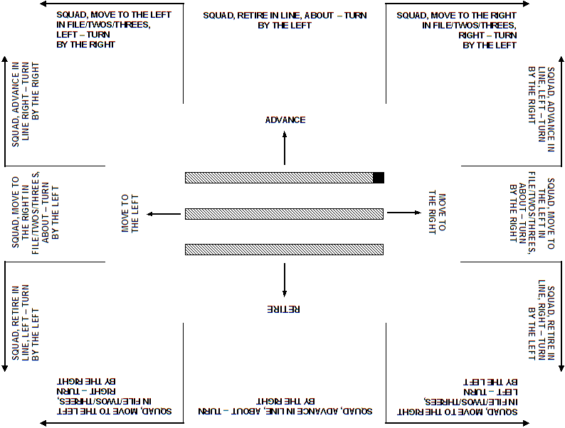

ATTEN – TION
or
QUICK – MARCH. Therefore, no deviations from the standards are allowed, unless
specifically mentioned in this manual, to ensure that the Canadian
Pathfinder organisation drills as a single entity.
ATTEN – TION
or
QUICK – MARCH. Therefore, no deviations from the standards are allowed, unless
specifically mentioned in this manual, to ensure that the Canadian
Pathfinder organisation drills as a single entity.
ATTEN – TION
or
QUICK – MARCH. Therefore, no deviations from the standards are allowed, unless
specifically mentioned in this manual, to ensure that the Canadian
Pathfinder organisation drills as a single entity.
ATTEN – TION
or
QUICK – MARCH. Therefore, no deviations from the standards are allowed, unless
specifically mentioned in this manual, to ensure that the Canadian
Pathfinder organisation drills as a single entity.
(1) Bending the right (left) knee. One leg is braced with the foot firm and flat on the ground maintaining balance with the foot and ankle. The opposite knee is bent and leg raised so that the thigh is parallel to the ground. The bent leg is relaxed so that the lower leg forms a right angle with the thigh, and the foot hangs loosely with the toes pointed downward at a natural angle.
(2) Straightening the right (left) leg. The leg is straightened by forcing the toe downward so that the toe of the foot strikes the ground first followed by the heel.
(3) Shooting the right (left) foot forward (backward). One leg is kept braced with the foot on the ground while the other foot is shot forward or backward, straight-legged, ready to carry the weight of the body.
(4) Shifting the weight. Body weight is shifted by transferring the weight onto one foot while maintaining balance with the foot and ankle of the supporting leg.
(1) cautionary commands
(2) executive commands
ADVANCE,
RETIRE, etc. The executive command serves as the signal for the movement to
be carried out. Throughout this manual, words of command are printed in
capital letters. A dash separates the cautionary from the executive
portion of the command; e.g.,
ATTEN – TION.
AS YOU WERE
shall be used to order a squad to a previous position or to cancel an
incorrect order before the order has been completed.
(1) SQUAD, OFFICER ON PARADE, DIS – MISS
(1) SQUAD, MOVE TO THE RIGHT IN THREES, RIGHT – TURN, for a squad in line facing the front and turning to the right into
three files
(2) SQUAD, RETIRE IN LINE, RIGHT – TURN, for a squad in three files facing the right and turning to the rear
(3) SQUAD, MOVE TO THE RIGHT IN TWOS, ABOUT – TURN, for a squad in two files facing the left and turning to the right
(4) SQUAD, ADVANCE IN LINE, LEFT – TURN, for a squad facing the right and turning to the front
(5) SQUAD, DIAGONAL MARCH, RIGHT IN – CLINE, for a squad in threes or in line and inclining right
(6) SQUAD, MOVE TO THE RIGHT IN FILE, LEFT IN – CLINE, for a squad in diagonal march and turning to the right in single
file
BY THE LEFT
or
BY THE RIGHT, the directing flank normally being the side on which the marker is
located.
|
 |
| Figure 1-1: Changing Direction and Directing Flanks |
CALLING OUT THE TIME. For example, on the command
CALLING OUT THE TIME, RIGHT – TURN, the squad:
(1) executes the first movement of the turn while calling out
"ONE"
(2) calls
"TWO – THREE" while observing the standard pause
(3) calls out
"ONE" while executing the final movement
"LEFT – RIGHT – LEFT".
(1) order the squad into a suitable formation; e.g., hollow square
(2) review appropriate previous lessons
(3) state the movement to be taught and the reason for teaching
(1) Stage 1: Demonstration and Breakdown.
a. Demonstrate the complete movement, calling out the time.
b. Demonstrate the first part of the movement.
c. Explain how the first part of the movement is done.
d. Give the squad the opportunity to ask questions.
e. Practice the squad on the first movement.
f. Teach each subsequent movement following the sequence described above.
g. Give two complete and final demonstrations.
(2) Stage 2: Practice The Complete Movement.
a. Practice the complete movement with the instructor calling the time.
b. Practice the complete movement with the squad calling the time.
c. Practice the complete movement with the squad judging the time.
Note: On difficult movements, or movements with several stages, a further demonstration may be given prior to practising the complete movement.
(1) restate the movement taught and the reason for teaching
(2) state how well the squad performed on the movements
(3) state the next lesson
 Created by Delwin Clarke on 29-May-08.
Created by Delwin Clarke on 29-May-08.